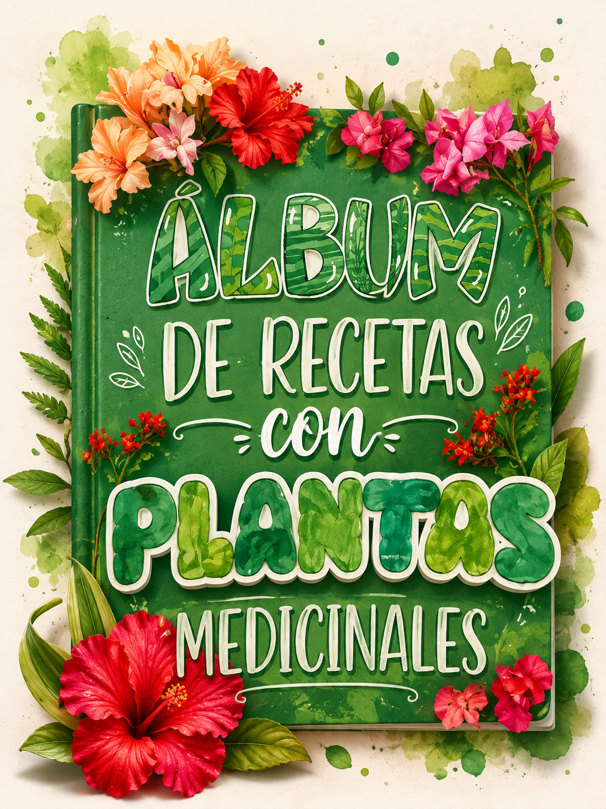
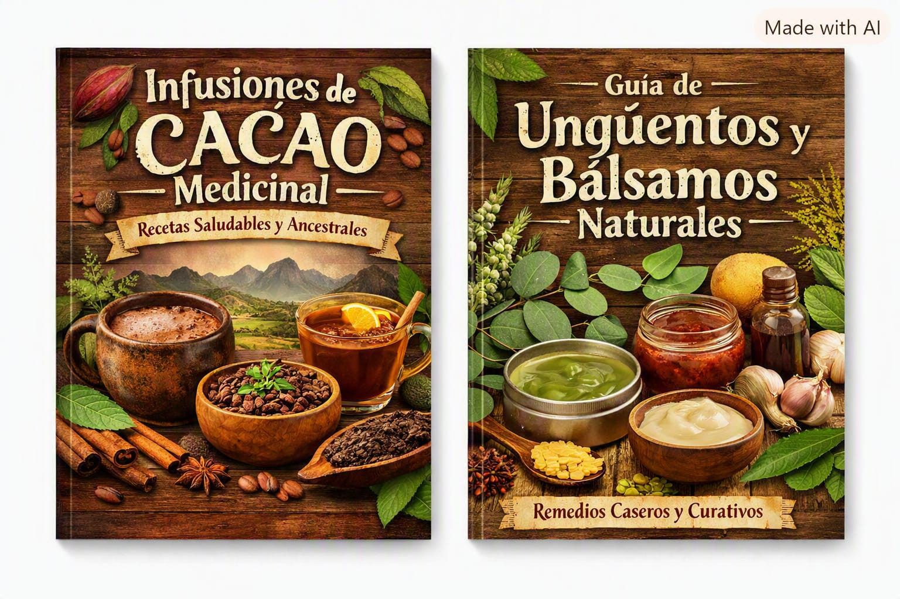

Hierba Luisa
Conoce su aroma, su presencia en la tradición y la receta incluida en nuestro álbum.
Descubre nuestro álbum de recetas y conocimientos tradicionales sobre plantas de la selva alta de Tingo María, creado para aprender, valorar y compartir la riqueza de nuestra naturaleza.

Somos un equipo escolar que quiso transformar la curiosidad por las plantas en una experiencia visual, educativa y cercana. Healthy Herbs reúne recetas, información botánica y saberes tradicionales para valorar la biodiversidad de nuestra región.
Nuestro álbum contiene una guía de recetas para preparar remedios tradicionales con plantas de la selva alta de Tingo María. Cada receta incluye advertencias, pasos, información de la planta y una referencia de dónde crece.
Conoce su aroma, su presencia en la tradición y la receta incluida en nuestro álbum.
Descubre esta planta de tradición amazónica y la información que acompaña su ficha.
Explora esta liana amazónica, su entorno y las advertencias presentadas en la guía.
Conoce esta especie amazónica y el contexto tradicional que presenta nuestro álbum.
Además de nuestro álbum principal, presentamos nuevas propuestas inspiradas en ingredientes y plantas de nuestra región.

Tipos de cacao: criollo fino de aroma, cacao chuncho y cacao amazónico.
Recetas principales:
Enfoque: bebidas calientes y frías que combinan cacao con hierbas locales.
Plantas y semillas: linaza, cola de caballo, boldo, muña y hierba luisa.
Recetas principales:
Enfoque: bebidas tradicionales peruanas con un giro moderno para ferias y actividades locales.
Plantas: sábila, eucalipto, matico y sangre de grado.
Recetas principales:
Enfoque: productos artesanales de uso externo presentados como ideas para kits de bienestar natural.
Las imágenes botánicas de esta galería provienen de Wikimedia Commons. Haz clic en “fuente” para consultar la imagen original.
.jpg)
.jpg)
_en_el_jardín_botánico_de_Takiwasi.jpg)
.jpg)

.jpg)
.jpg)
.jpg)

Sagrada Familia Fe y Alegría N° 64
Proyecto escolar: Healthy Herbs
Itzhel Rihanna Delgado Martel
Salva Jara Mishell Camila
Ariadnny Vidal Romayna Bryanna
Marzela Luciana del Águila Shupingahua
García Dávila Thiago Romeo
Si deseas adquirir el álbum: